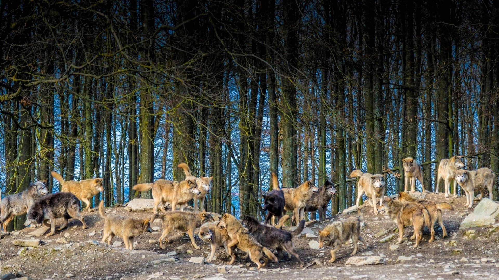
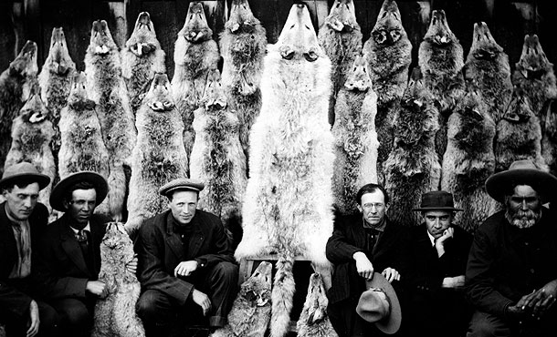
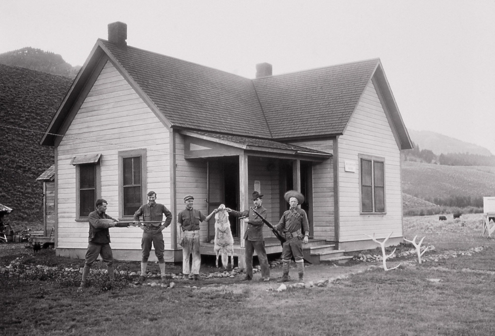
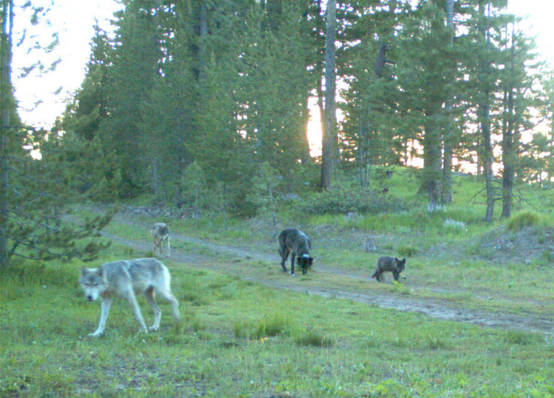
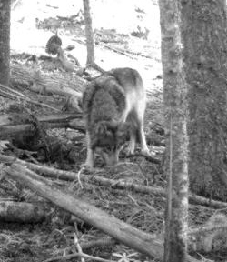
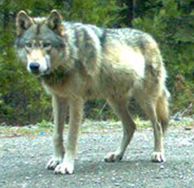
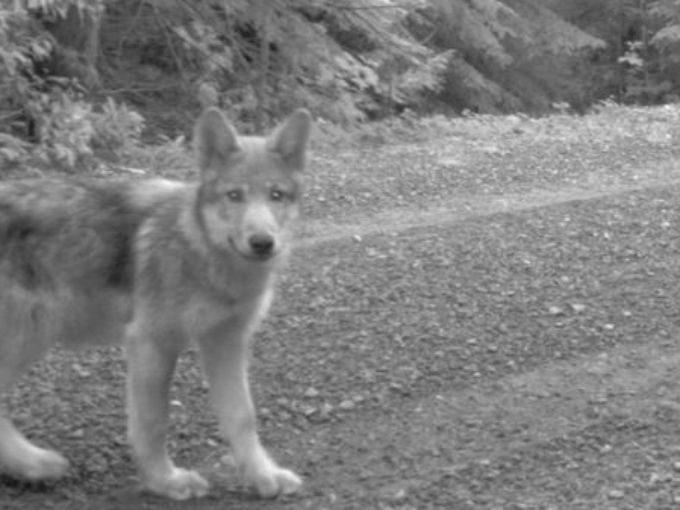

How a once-persecuted predator is returning to the US
GRAY WOLF POPULATIONS THROUGH TIME
HISTORICAL NUMBERS
Few animals in human history have been as hated as the wolf.
Wolves in the contiguous US once numbered in the hundreds of thousands,
but as Europeans colonized the country, the land's two top predators -
wolves and humans - clashed.

ERADICATION
Humans brought vulnerable livestock into the wilderness's backyard,
where they became easy prey for wolves. Considered vermin, wolves and other
predators were eliminated en masse by government-sponsored eradication campaigns.

WIPED OUT
In 1926, the last wolves in Yellowstone were killed.
By the 1950s, wolves in the contiguous US were nearly wiped out.
Only a few wolves remained in northeastern Minnesota and Michigan.

PROTECTED
With the environmental movement of the 60's and 70's, public attitudes towards wolves shifted.
Wolves were protected under the Endangered Species Act in 1973.
REINTRODUCED
In 1995 and 1996, wolves were reintroduced into Yellowstone National Park and central Idaho.
In 1998, wolves were released into eastern Arizona.
TODAY
Their population has rebounded in the Northern Rockies and Great Lakes,
and is slowly growing in the Pacific Northwest and Southwest.
How wolves influence ecosystems
The Journey of OR-7
In 2011, a lone wolf made an epic trek of over 1000 miles across Oregon
and into California. Follow his story to learn what it means for the
future of wolf recovery in California.
Wolf OR-7 was born in 2009 to the Imnaha Pack in northeastern Oregon.
Trail camera image of the Imnaha pack.

At two years old, OR-7 was fitted with a GPS collar by biologists.
OR-7 stands for the seventh wolf collared in Oregon.
OR-7 left his pack in 2011 to seek out his own territory.
He covered thousands of miles, while his GPS collar sent his
coordinates to biologists.
Trail camera image of OR-7.

When OR-7 entered the Cascade Mountains, he represented the
first wolf documented west of the Cascades since 1947, when
the last known wolf was killed.
In late 2011, OR-7 crossed into California, marking the first
documented wolf in California since 1924.
Trail camera image of OR-7.

After wandering California for a year, OR-7 finally settled
in southern Oregon. He found a mate and in 2014, they had pups.
OR-7's family is called the Rogue Pack.
Trail camera image of one of OR-7's pups.

It is only a matter of time before California has its own
wolf population once again.